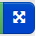

jQuery on supersuosittu JavaScript-kirjasto
697860 sivua miljoonasta käyttää jQueryä (2015-11-05)
jQuery helpottaa DOM:n käsittelyä, Ajax-kutsujen tekemistä, ym.
Lisäksi jQuery paikkaa selainten yhteensopivuusongelmia
Esim.
$('.luokka').html('');vs
var els = document.getElementsByClassName('luokka');
for (var i=0; i<els.length; ++i) {
els[i].innerHTML = '';
}jQuery määrittelee muuttujan nimeltä $
jQuery$(VALITSIN) palauttaa kaikki valitsinta vastaavat elementit
Esim.
$('img').hide();$('a.linkki').click(function() {
alert("Jotain linkkiä klikattiin");
});Tapahtumien takaisinkutsufunktioissa (callback functions)
jQuery asettaa muuttujan this
arvoksi elementin, johon tapahtuma kohdistui
$( ... ) -kutsulla mistä tahansa elementistä saa vastaavan jQuery-olion
Esim. piilota nappula kun sitä klikataan
$('button').click(function() {
$(this).hide();
});.on() joka ottaa parametrikseen
kuunneltavan tapahtuman tyypin$("input[type=text]").on("input", function(e) {
$('h1').text($(this).val());
});Useat jQuery-olioiden metodit joko palauttavat arvon tai asettavat arvon riippuen siitä, annetaanko niille parametri
Esim. html()
// Haetaan ensimmäisen h1-elementin sisältö
var h = $('h1').html();
// Asetetaan kaikkien h1-elementtien sisältö
$('h1').html('moi');input) arvon voi lukea ja asettaa val-metodilla:var email = $('input[name=email]').val();
$('input[name=email]').val('');$.ajax({
url: "./resurssi.txt",
method: 'GET',
success: function(result){
$("div").html(result);
}
});Avaa aiemmin tekemäsi supersankarilomake tai jatka tästä.
Lisää jQuery-kirjasto. Plunkerissa voit tehdä sen oikean laidan kirja-painikkeella ja taikasauvanapilla.
Tehdään supersankarilomakkeesta modernimpi!
Nykyisellään web-sovelluksemme toimii niin, että kun lomake lähetetään, niin ladataan kokonaan uusi sivu ja meidän lomakesivumme katoaa.
Tämä kaivannee vähän vinkkejä ja lisäselitystä -->
Aloittaa voi vaikkapa siitä, että kuunnellaan lomakkeen
submit-tapahtumia. Tiedostossa script.js:
// Varmistutaan että dokumentti on latautunut
$(document).ready(function() {
// Kuunnellaan submit-tapahtumia
$('form').submit(laheta);
});Takaisinkutsufunktiossa laheta perumme submit-tapahtuman oletustoiminnallisuuden
eli lomakkeen lähetyksen
function laheta(event) {
event.preventDefault();
}Nyt lomakkeen lähetä-napin ei pitäisi tehdä mitään kun sitä klikkaa.
Jos ei näytä toimivan odotetusti niin ensimmäisenä voi vaikkapa tarkistaa kehitystyökalujen konsolista näkyykö siellä virheitä. (Plunker:in kanssa konsoliin tulee myös ylimääräistä roskaa. Debuggausta helpottaa jos avaa sivun uuteen ikkunaan )
Jos kaikki meni hyvin tähän asti, voimme laheta-funktion sisällä tehdä Ajax-kutsun samaan
osoitteeseen, johon aiemmin lähetimme lomakkeen
$.ajax({
url: "http://pilvilomake.appspot.com/supersankari",
method: 'POST',
data: {nimi: "Anna", supersankari: "Superhessu"},
success: lahetysOnnistui
});lahetysOnnistui
joka saa parametrinaan vastauksenfunction lahetysOnnistui(response) {
alert(response);
}Nyt pitäisi vielä käyttää Ajax-pyynnössä oikeita käyttäjän syöttämiä arvoja.
Funktiossa laheta voimme lukea lomakkeen arvot tämännäköisillä
ei-ihan-yksinkertaisilla valitsimilla:
var nimi = $('form input[name=nimi]').val();
var sankari = $('form input[name=supersankari]:checked').val();ja muuttaa Ajax-kutsu käyttämään niitä
$.ajax({
// ...
data: {nimi: nimi, supersankari: sankari},
// ...
});Sitten pitäisi enää näyttää vastaus jotenkin hienommin kuin
alert:lla...